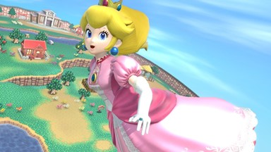

 La Princesa Peach es un personaje ficticio en la franquicia de videojuegos de Super Mario de Nintendo. Originalmente creada por Shigeru Miyamoto, Peach es la princesa del ficticio Reino Champiñón, que está constantemente bajo ataque de Bowser. Frecuentemente interpreta a la damisela en apuros dentro de la serie, con excepción de Super Princess Peach, en el que es la protagonista
A menudo es retratada como el interés amoroso de Mario y ha aparecido en casi todos los juegos de Super Mario hasta la fecha, además de ser ella el personaje femenino principal. También ha aparecido en las franquicias Mario Party, Mario Kart y Super Smash Bros, como personaje jugable.
La Princesa Peach tiene el cabello largo y rubio, ojos azules, una figura de reloj de arena y una tez blanca. En los juegos de la saga y spin offs, Peach se presenta con una estatura superior a la de la mayor parte de personajes humanos, siendo solo más baja que Pauline, Waluigi, entre otros.
Por lo general lleva un vestido color rosa, el cual cuenta con adornos de volantes, mangas cortas hinchadas y faldón con múltiples capas de enaguas. Sus accesorios son zapatos de tacón de color rojo, guantes largos de noche blancos, un broche de zafiro, aretes de zafiro y una corona de oro adornada con zafiros y rubíes.
El nombre de «Peach» quiere decir melocotón en inglés, porque ella es tan dulce como dicha fruta, (detalle que la caracteriza). La princesa tiene afinidad por el color rosa y ha demostrado ser una clásica dama y una buena monarca, siempre risueña y simpática con el resto de personajes de la saga, excepto los enemigos.